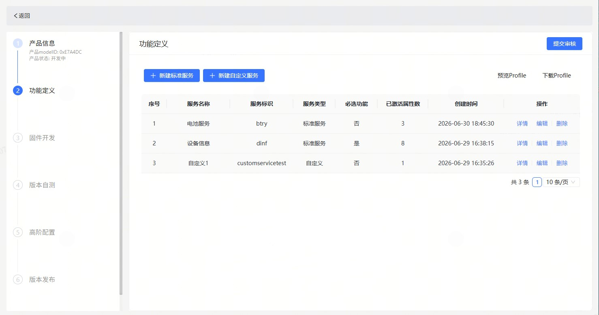
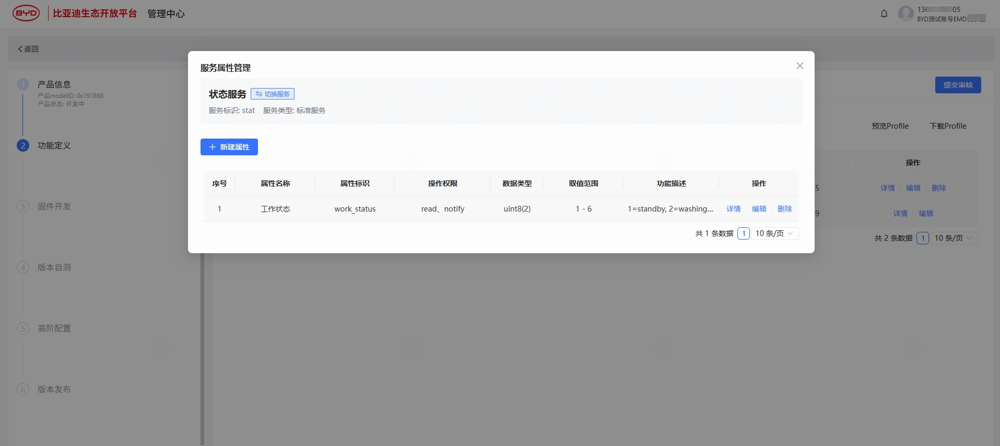
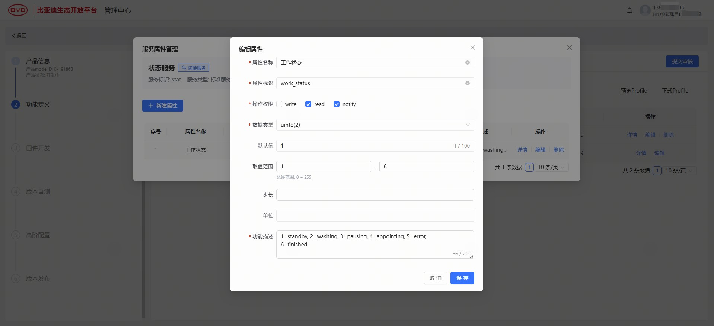
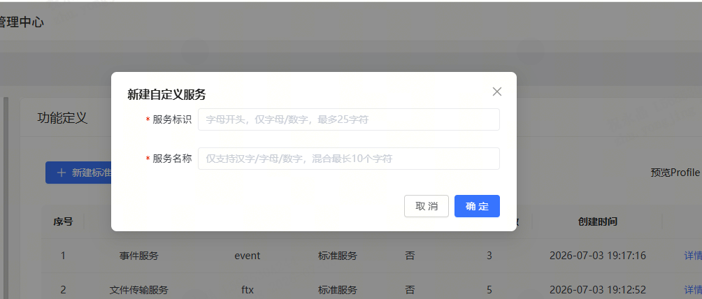
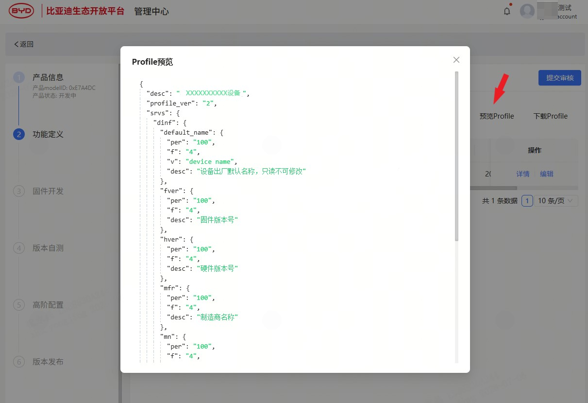
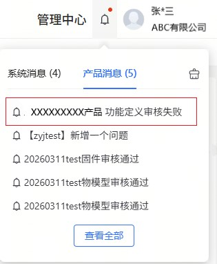
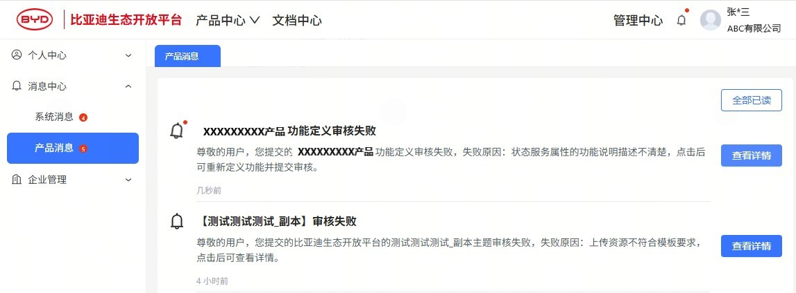
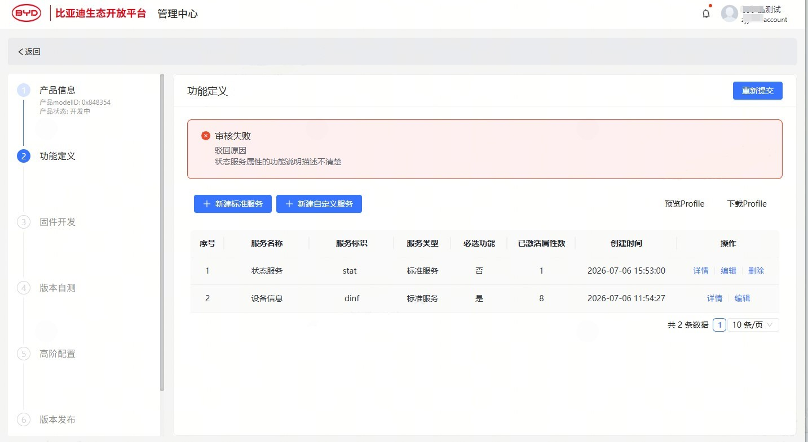

功能定义
本篇文章主要讲述了如何在平台进行“功能定义”，即产品的物模型定义，关于如何设计产品的功能定义，请参考《⽐亚迪智能设备开放接⼊协议》。
注意：产品功能定义会直接影响后续的固件开发，请在开发之前务必参考《比亚迪智能设备开放接⼊协议》（通过企业认证并签署《比亚迪AIoT业务服务协议》后可查看该协议）完成产品功能定义的设计。
1. 概念说明
为帮助开发者快速定义产品的功能，比亚迪为IoT产品定义了数据协议格式，作为“车机智慧物联APP-比亚迪生态开放平台-设备”以及“比亚迪IoT云-三方设备云”之间的交流语言。设备开发需按照产品功能定义来实现相关功能。
2. 前提条件
1）在比亚迪生态开放平台进行“企业开发者认证“且被审核通过，请参考“开发者注册认证-4.1 企业开发者认证”。
2）登录比亚迪生态开放平台。
3）在平台成功创建产品，AIoT服务平台产品接入流程中，已经填写“产品信息”。
4）明确产品功能定义设计。
3. 操作步骤
3.1 操作入口
平台支持标准产品方案接入，直连接入/云云对接/云设备接入方式都通过“功能定义”自动生成物模型的Profile，您需要配置产品的功能定义。功能定义路径：【管理中心-AIoT服务平台-产品接入-产品管理】选择您的产品，进入“产品开发”的流程（如下图左侧），功能定义如下图：

图 3-1 功能定义界面
3.2 新建服务
功能定义之前务必参考《⽐亚迪智能设备开放接⼊协议》（通过企业认证并签署《比亚迪AIoT业务服务协议》后可查看该协议）。功能定义新建服务时，您可以有两种选择：
- 优先使用标准服务——平台已为绝大多数产品场景预置了标准服务及其属性，开箱即用。
- 必要时使用自定义服务——若标准服务无法满足您的业务需求，可新增自定义服务，支持更灵活的能力扩展。
3.2.1 新建标准服务
基于BLE SIG定义的标准服务，如下表，包含常见的各项服务等，各服务里预置了相关属性，大多数服务支持新建属性和修改预置属性，也有部分服务不支持修改预置属性。其中，device information service是必选服务。
| 服务标识 | 服务全称 | 服务名称 | 预置属性说明 | 是否必选 |
|---|---|---|---|---|
| dinf | device information service | 设备信息服务 | IoT设备信息，包括制造商、型号、名称等属性。 | 是 |
| switch | switch service | 开关服务 | 设备开、关项信息 | 否 |
| mode | mode service | 模式服务 | 设备工作模式 | 否 |
| stat | state service | 状态服务 | 设备工作状态 | 否 |
| temp | temperature service | 温度服务 | 设备当前温度值 | 否 |
| time | time service | 时间服务 | 设备剩余运行时间（分钟） | 否 |
| rot | rotate service | 旋转服务 | 设备当前旋转角度 | 否 |
| btry | battery service | 电池服务 | 设备电池充电状态、电池电量百分比、电池在位状态 | 否 |
| video | video service | 视频服务 | 分辨率、画质、视频流地址 | 否 |
| file | file service | 文件服务 | SD卡空间 | 否 |
| location | location service | 位置服务 | 纬度、经度 | 否 |
| ota | ota service | OTA升级服务 | OTA能力、OTA状态等属性 | 否 |
| sec | security service | 安全服务 | 安全等级、公钥等相关安全属性 | 否 |
| ftx | file transfer service | 文件传输服务 | 传输完成事件、加密模式等属性 | 否 |
| action | action service | 动作服务 | 启动、停止等属性 | 否 |
| event | event service | 事件服务 | 通知事件等属性 | 否 |
表 3-1 标准服务
以状态服务为例，新增状态服务，如下图3-2，里面只有一个预置的属性：工作状态。开发者可以新增属性，也可以修改预置属性。关于服务和属性的配置，需要先熟悉协议《比亚迪智能设备开放接⼊协议》。如仍有问题可以提交工单；如您已经和比亚迪签署线下商务等合作协议，可以通过比亚迪接口人与研发支持团队直接沟通。

图 3-2 新建标准服务-状态服务
状态服务的属性配置如下图 3-3。其中，功能描述需要准确详细说明。

图 3-3 状态服务-编辑属性
3.2.2 新建自定义服务
自定义服务如下图。

图 3-4 新建自定义服务
3.3 预览和下载Profile
完成功能定义配置后，平台自动生成Profile文件——这是车机识别IoT设备能力所依赖的的标准描述文件，您可以在线预览和下载该文件，建议仔细核对内容后提交审核。

图 3-5 预览Profile
3.4 提交审核
功能定义提交审核后，需等待3-5个工作日审核，如果审核失败或成功，您会及时收到短信通知和站内信通知。其中，站内信通知在标题栏消息中心下拉框中，点击“查看全部”，进入消息中心，可查看功能定义审核失败的站内信完整内容，如图3-6，点击“查看详情”，直接跳转到审核失败的“功能定义”流程节点，如图3-7，该页面可以修改功能定义，并重新提交审核。


图 3-6 消息中心站内信

图 3-7 功能定义审核失败